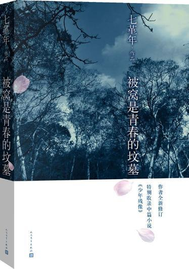

| 书名 | 被窝是青春的坟墓 |
| 作者 | 七堇年 |
| 类别 | 青春 随笔 |
| 标签 | 叛逆 青春 成长 |
| 页数 | 284 |
| 字数 | 242000 |
| 出版社 | 长江文艺出版社 |
| 出版时间 | 2007/11 |
作品简介
《被窝是青春的坟墓》是七堇年的第一部散文小说集，是她的第二部单行本。全书收录包括序在内的19篇文章，共分为两部分，惊蛰与清明，寓意成长与写作路途上的不同阶段。收录曾经发表在杂志上的部分中短篇作品，并加入了大部分最新创作的散文等作品。作家郭敬明称七堇年“思想深刻、文笔成熟，远远超过作者本人的年龄和阅历。”也收录曾经发表在杂志上的部分中短篇作品，并加入了大部分最新创作的散文等作品。青春文学领军人物郭敬明由衷赞扬七堇年“思想深刻、文笔成熟”，远远超过作者本人的年龄和阅历。 “这是一部让人惊叹的作品，也是一部异常深刻和饱满的成长记录。在众多或偏激或强说愁或疼痛苍白的青春文学领域里，七堇年的独树一帜必定引起所有人的瞩目。”2013年《被窝是青春的坟墓》再版，特别收录七堇年中篇小说《少年残像》，再续温暖青春风暴！
目 录
- 自序
- 惊蛰
- 远镇
- 北方
- 花朵之蓝
- 春别
- 冰是睡着的水
- 薄奠
- 灯下夜祷
- 流景闲草
- 我不能悲伤地坐在你身旁
- 清明
- 书信
- 蓝颜
- 幻听
- 故城
- 昨天
- 城事
- 札记
- 被窝是青春的坟墓
作者简介
七堇年，80后畅销书作家，女，一九八六年十月生。主要作品有：《大地之灯》《被窝是青春的坟墓》《澜本嫁衣》《尘曲》等，在青春文学领域以其独特的文风广受读者欢迎，作品多次荣登畅销书排行榜。 曾获新概念作文大赛一等奖，华语文学传媒大奖最具潜力新人奖等。